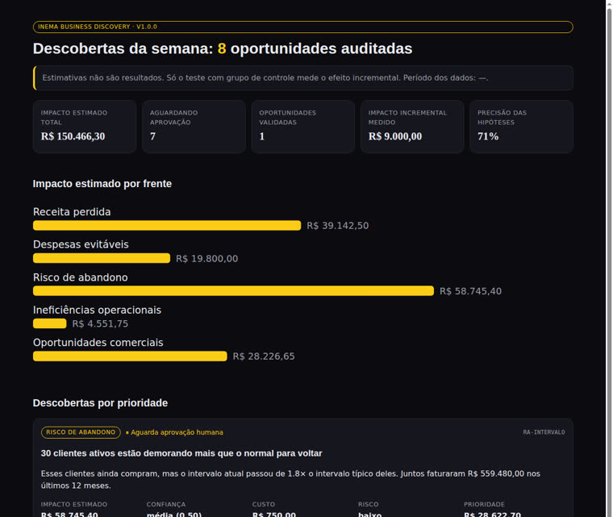
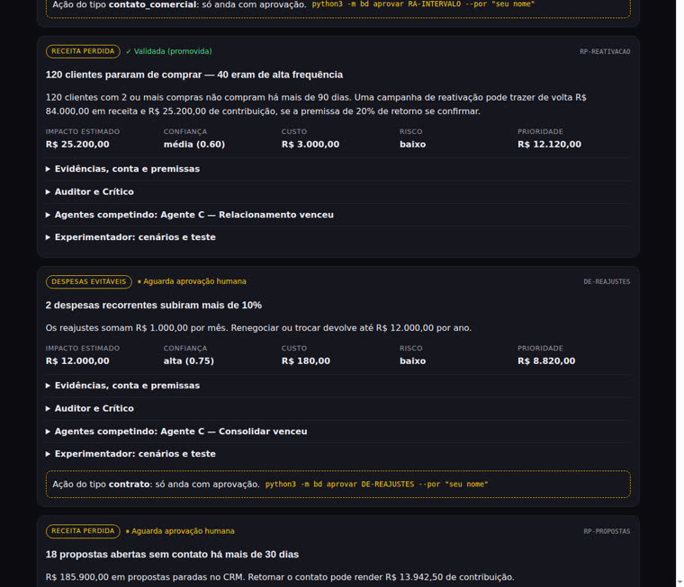

Seis agentes buscan dónde la empresa pierde dinero, prueban la solución con un grupo de control y solo guardan lo que los números confirmaron. Lo ejecutas cuando quieras, por ejemplo cada lunes.
INEMA Business Discovery es un programa abierto que lee las planillas de tu empresa (ventas, clientes, propuestas, gastos y operación) y señala oportunidades: clientes que dejaron de comprar, gastos que subieron demasiado, retrabajo, ventas que podrían concretarse. Sirve al dueño o gerente de una pequeña o mediana empresa que quiere decidir con pruebas, no con corazonadas. Cada hallazgo viene con la cuenta, el grado de confianza y una prueba para confirmarlo. Para usarlo, basta con Python 3 y las planillas exportadas en CSV.
Un tablero muestra números. Esta plataforma investiga, propone una explicación, planifica una prueba y mide si funcionó, en cada ronda.
Ingresos perdidos, gastos evitables, riesgo de abandono, ineficiencias operativas y oportunidades comerciales.
El Investigador calcula, el Auditor rehace la cuenta, el Crítico intenta derribar la conclusión y una persona aprueba la acción.
La mitad de los clientes recibe la acción y la otra mitad no. Solo cuenta el resultado adicional, el efecto incremental.
LOOP-R es el framework abierto de INEMA para agentes que se verifican a sí mismos: Localizar, Operar, Observar, Proponer y Reforzar. Aquí cada letra tiene un agente responsable.
Encuentra patrones y anomalías con cálculo puro, sin modelo de lenguaje, para que todo se pueda verificar.
Escribe la hipótesis y pone a competir a tres agentes: A Recuperación, B Oferta, C Relación. El evaluador puntúa las propuestas sin saber quién hizo cada una.
Arma escenarios pesimista, base y optimista, y sortea el grupo de prueba y el grupo de control.
Rehace cada cuenta a partir de los datos de entrada y verifica que los clientes citados existan. Reprueba lo que no cuadra.
Busca otra explicación (estacionalidad, concentración en pocos clientes, muestra pequeña) y baja la confianza.
Guarda cada decisión con nombre y hora. La estrategia que pasó la prueba gana peso en el siguiente ciclo.
Sin dependencias, sin base de datos externa, sin clave de API. El modelo de lenguaje es opcional y corre en tu computadora.
Ya viene en Linux y macOS. En Windows, instálalo desde python.org; allí el comando suele ser python en lugar de python3.
# verificar python3 --version
Exporta desde el CRM y el sistema financiero. Solo vendas.csv es obligatorio; cada archivo adicional activa un frente. Mantén los nombres de archivos y columnas en portugués tal como aparecen: es lo que la herramienta lee.
# columnas mínimas venda_id, data, cliente_id, produto_id, valor # quantidade (cantidad) es opcional
Solo si quieres que un modelo local escriba la explicación de cada hallazgo. Los modelos grandes ocupan decenas de GB; en una computadora común, usa uno más pequeño.
# ejemplo liviano ollama pull llama3.1:8b
Empieza con la demostración de una empresa ficticia. Después cámbiala por tu carpeta de datos.
Genera una empresa inventada y ejecuta el ciclo completo: análisis, aprobación, prueba simulada y validación. Sin git, descarga el ZIP del proyecto, descomprímelo y abre la terminal en la carpeta. En Windows, abre la carpeta en el Explorador, haz clic derecho y elige "Abrir en Terminal".
git clone https://github.com/inematds/inema-business-discovery cd inema-business-discovery python3 -m bd demo # 8 descubrimientos en los 5 frentes
La demo reproduce el escenario ilustrativo de recuperación de clientes. Números inventados, no es un resultado observado.
# salida de la demo
120 clientes × 20% × R$ 3.500,00 = ingreso potencial R$ 84.000,00
× margen 30% = contribución potencial R$ 25.200,00
Pon los CSV en una carpeta. Solo vendas.csv es obligatorio; las columnas de cada archivo están en la tabla del README. Se aceptan el separador ; o , y valores como 1.234,56. Escribe tus supuestos en el config.json; lo que no pongas usa el valor predeterminado.
Importante: los nombres de archivos, de columnas y las claves del config deben quedar en portugués tal como aparecen (vendas.csv, cliente_id, valor, margem_contribuicao…), porque es lo que la herramienta lee.
# mi-empresa/config.json (ejemplo) { "margem_contribuicao": 0.30, # margen de contribución: lo que queda de cada 1,00 vendido tras el costo directo "conversao_reativacao": 0.20, # cuántos inactivos esperas que vuelvan "custo_hora": 45, # costo de una hora de trabajo, en tu moneda "custo_contato_cliente": 25 # costo de contactar a un cliente, en tu moneda }
Los agentes trabajan en secuencia y guardan el informe, los grupos de prueba y la memoria.
python3 -m bd analisar --dados mi-empresa --saida saida # con explicación del modelo local: agrega --llm y "llm": {"provedor": "ollama"} en el config
Contacto comercial, descuento, precio, contrato y proceso solo avanzan con el nombre de una persona. Un agente no aprueba. El panel ocupa la terminal mientras está abierto: aprueba con su botón o ejecuta aprovar en otra terminal.
python3 -m bd servir --saida saida # http://127.0.0.1:8765 (¿puerto ocupado? usa --porta 8766) python3 -m bd aprovar RP-REATIVACAO --por "Tu Nombre" --saida saida
Usa los grupos sorteados en saida/planos/RP-REATIVACAO-grupos.csv: solo quienes están en el grupo teste (prueba) reciben la acción; el grupo controle (control) no. Después de 30 días, registra el resultado de todos, de los dos grupos.
# resultado.csv (una línea por cliente del archivo de grupos)
alvo_id,grupo,converteu,receita
C0002,teste,1,3500.00
C0001,controle,0,0
El Validador compara los dos grupos. El valor p indica la probabilidad de que la diferencia haya sido suerte: por debajo de 0,05 (5%), cuenta como efecto real. Si además la ganancia extra pagó el costo, la estrategia se convierte en lección promovida y gana peso en las próximas rondas; si no, queda registrada como descartada. La precisión compara la ganancia prevista con la medida. Con pocos clientes en la prueba, el resultado casi siempre sale descartado: es el sistema siendo honesto.
python3 -m bd validar RP-REATIVACAO --resultados resultado.csv --saida saida python3 -m bd memoria --saida saida # métricas, lecciones y registro
Pantallas reales generadas por la demostración. Los datos y la prueba son simulados.


Empieza en pequeño: tres módulos (radar, laboratorio de hipótesis y validador) sobre CSV. Los conectores, solo después de demostrar valor.
schema.sql ya está en el repo), ronda automática cada semana con un programador de tareas (n8n; hay un flujo de ejemplo) y panel web para varios usuarios (Next.js).